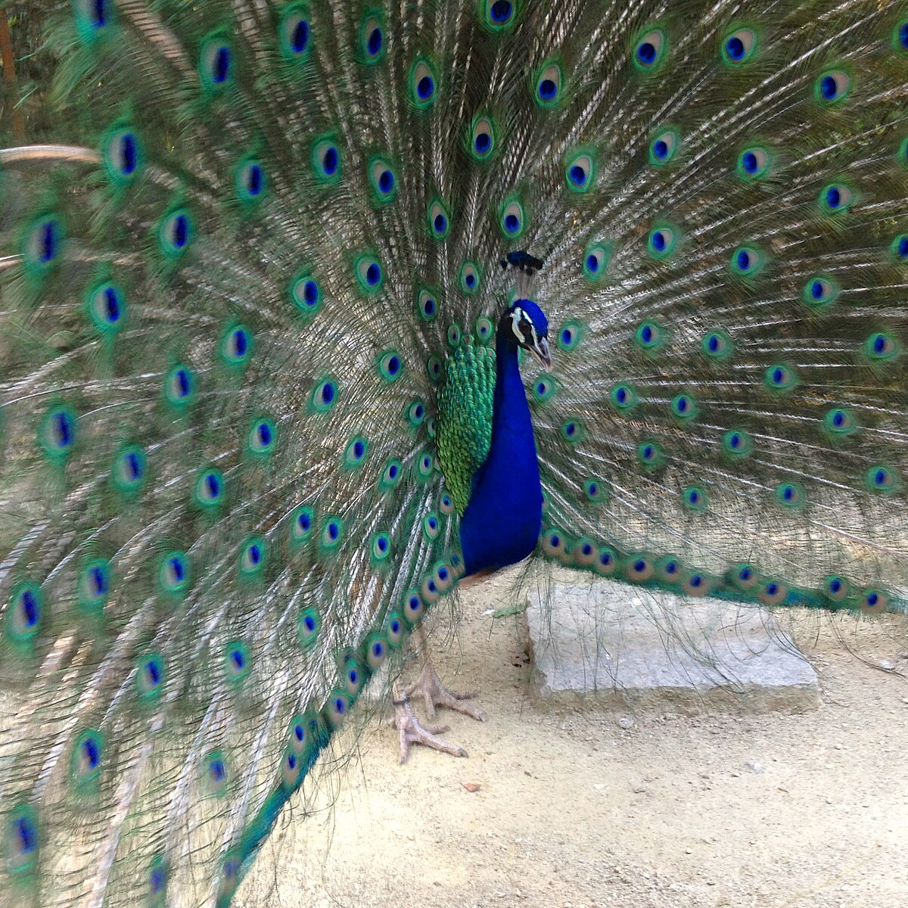

<p>クジャク</p>

<a href="https://commons.m.wikimedia.org/wiki/File:%E6%9D%B1%E5%B1%B1%E5%8B%95%E6%A4%8D%E7%89%A9%E5%9C%92%E3%83%90%E3%83%BC%E3%83%89%E3%83%9B%E3%83%BC%E3%83%AB_-_23%EF%BC%9A%E6%B1%82%E6%84%9B%E3%81%99%E3%82%8B%E3%82%A4%E3%83%B3%E3%83%89%E3%82%AF%E3%82%B8%E3%83%A3%E3%82%AF%E3%81%AE%E3%82%AA%E3%82%B9.jpg">東山動植物園バードホール - 23：求愛するインドクジャクのオス.jpg</a> © 2023 by <a href="https://commons.m.wikimedia.org/wiki/User:Kyu3a">Kyu3a</a> is licensed under <a href="https://creativecommons.org/licenses/by/4.0/">CC BY 4.0</a>
